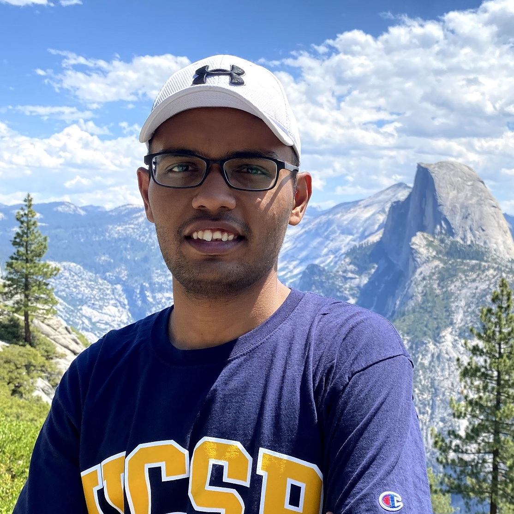
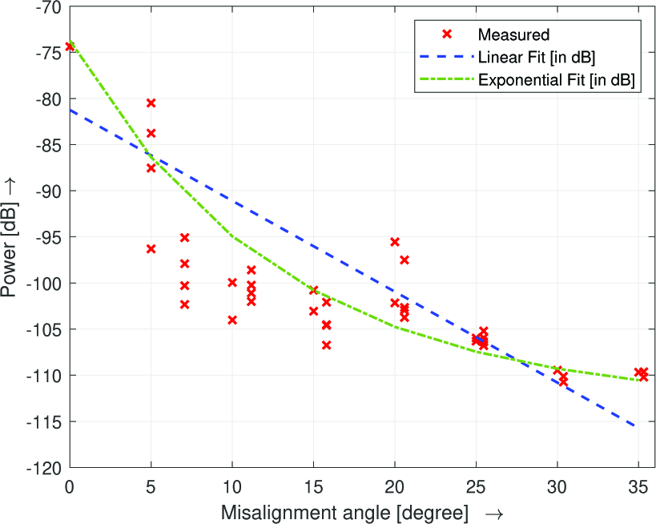
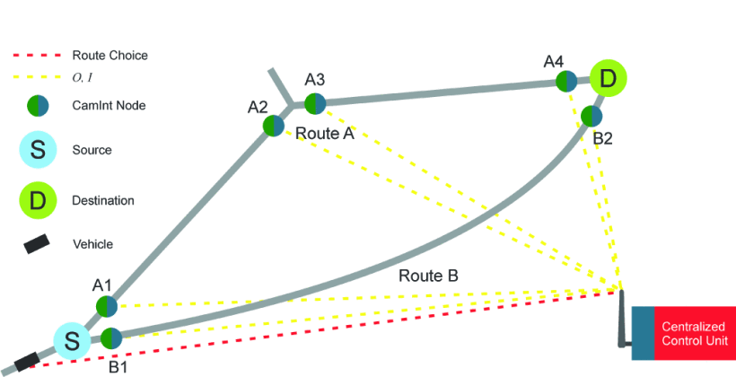
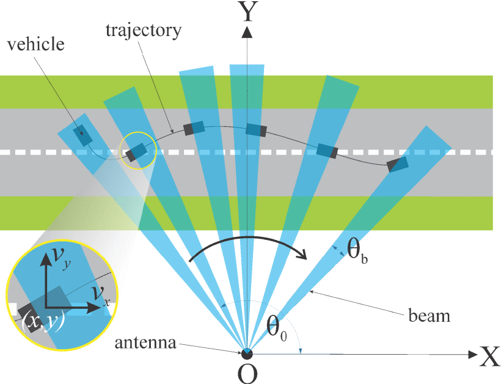

|
 |
I am a first year PhD student in the Electrical and Computer Engineering Department at University of California, Santa Barbara. I am fortunate to be advised by Prof. Yasamin Mostofi. My broad area of interest is Wireless Communication, Millimeter Waves and Signal Processing. Recently , I have been investigating the application of neural networks in these domains. I graduated from the National Institute of Technology, Durgapur with a bachelors degree in Electronics and Communication Engineering. I was advised by Dr. Aniruddha Chandra for my undergraduate thesis. Resume | Google Scholar | LinkedIn Email: mbiswal (at) ece.ucsb.edu |
 |
On the Characterization of Beam Misalignment in Outdoor-to-Indoor 60 GHz mmWave Channel |
 |
Intelligent Traffic Routing Based on Real-time Congestion Analysis |
 |
Error-tolerant Beam Steering of mmWave Antennas by Trajectory Estimation of Highway Vehicles |